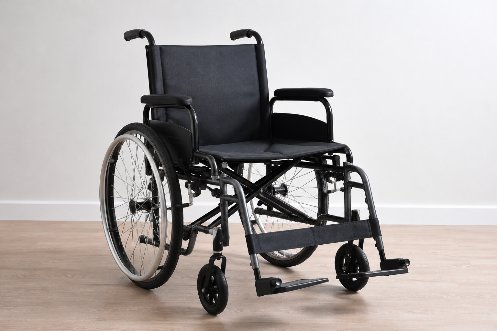
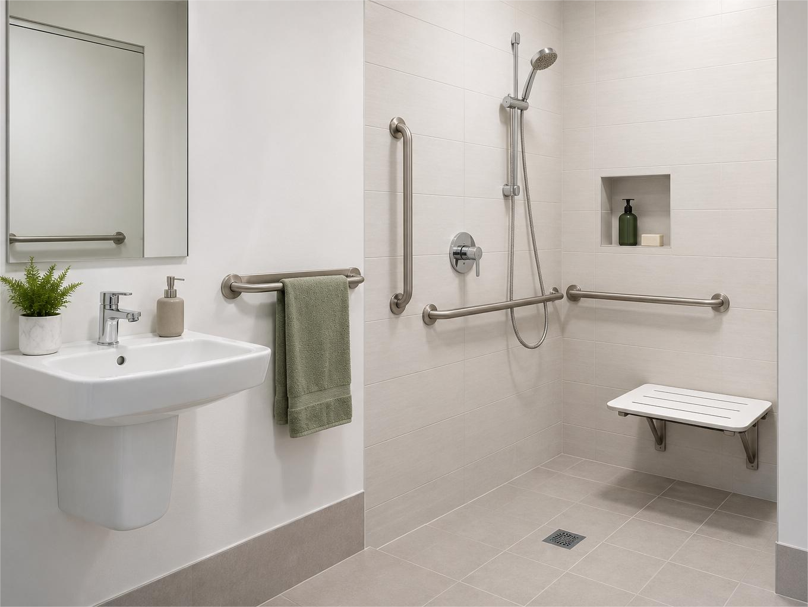

Occupational Therapy Services
Assistive Technology & Equipment Prescription
Assessment and recommendation of equipment and assistive technology to support safety, independence, comfort, and participation in everyday life. This may include mobility aids, seating, sensory supports, bathroom equipment, and daily living aids.


Home Modifications
Home assessments and recommendations for minor modifications to improve accessibility and safety within the home. This can include handrails, bathroom modifications, and environmental changes to support independence and reduce falls risk.
Paediatric Occupational Therapy
Ongoing therapy for school-aged children and adolescents to support emotional regulation, attention, sensory processing, motor skills, independence, social participation, and engagement in everyday activities. Therapy is tailored to each child’s strengths, interests, and goals.


Functional Capacity Assessments
Comprehensive assessments to better understand a person’s daily functioning, support needs, and goals across home, school, work, and community environments. Reports can assist with accessing supports and planning for future needs.
Capacity Building & Ongoing Therapy
Individualised therapy focused on building practical life skills, confidence, independence, and participation in meaningful activities across everyday environments.